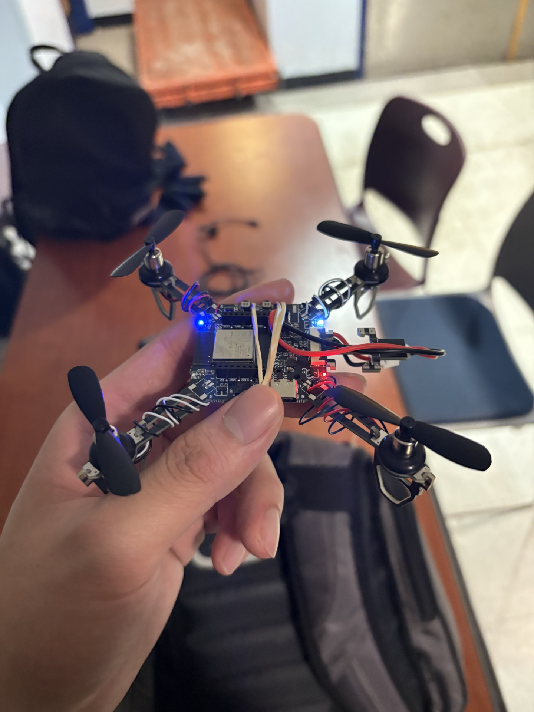
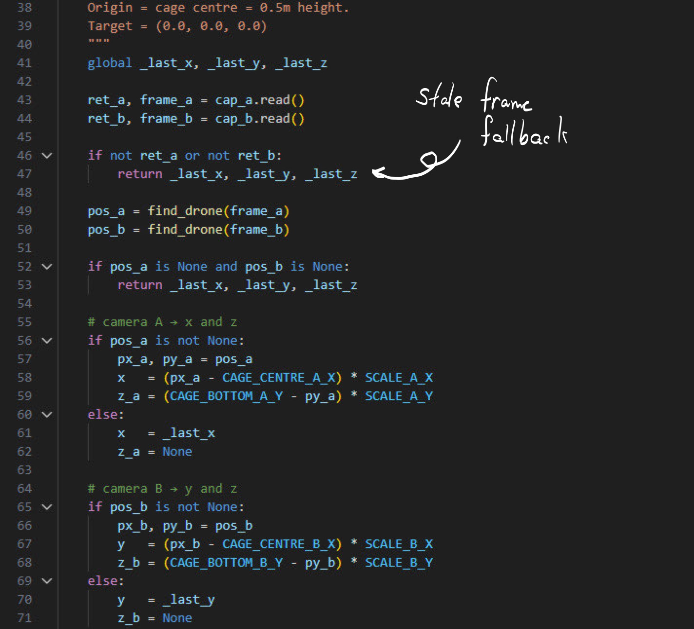
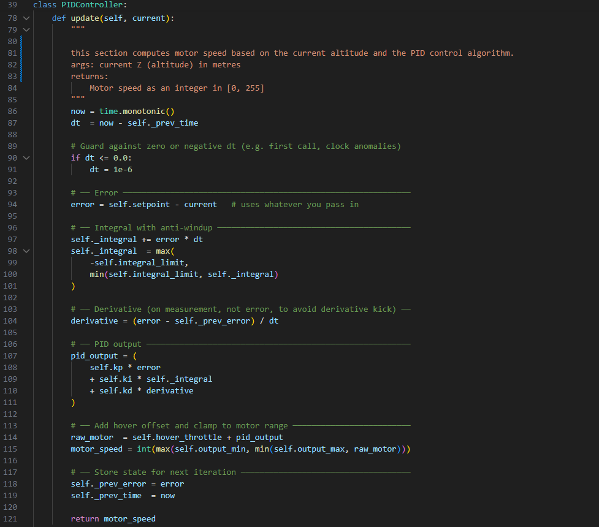
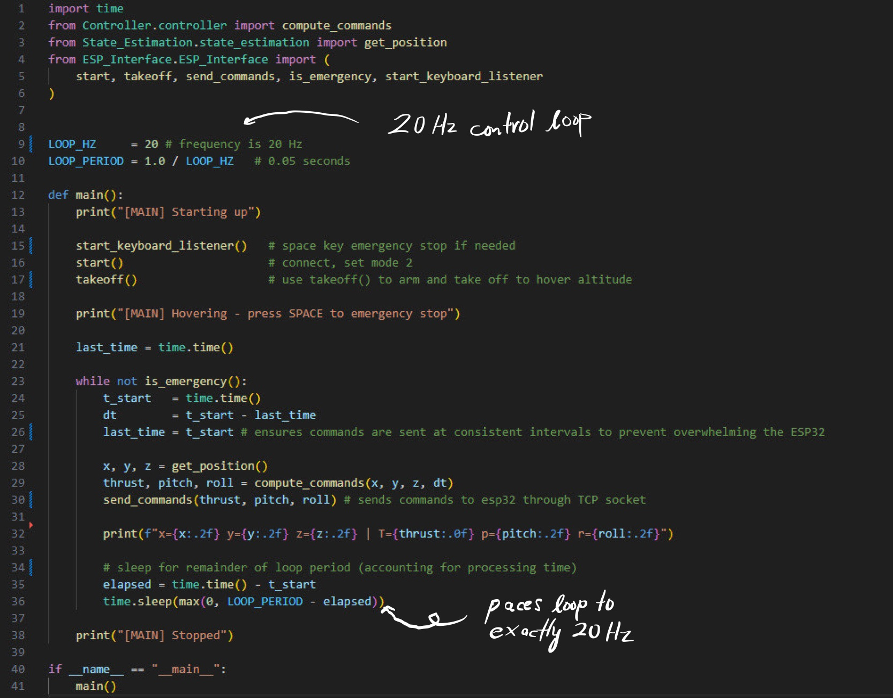

A real-time drone stabilization system built under tight time constraints. The objective was to keep a drone hovering at exactly 0.5 metres off the ground for 60 seconds — without any manual input. The solution was a Python computer vision pipeline that processed live dual-camera input and streamed correction commands directly to the drone over TCP.

Drones at low altitude are notoriously difficult to stabilize autonomously. Small perturbations in altitude or lateral position compound quickly, and any correction logic needs to be fast enough to respond before drift becomes unrecoverable. The challenge was building that logic from scratch with only camera input as the sensing modality — no reliable IMU data, no external positioning system.
The drone's onboard accelerometers proved unreliable at the scale of corrections we needed, introducing too much noise to act on directly. This forced us to rely entirely on vision for state estimation — a harder problem with higher latency, but ultimately more robust given the hardware constraints we were working with.
Two cameras provided overlapping fields of view of the drone and the ground below it. Object detection was handled using a Roboflow-trained model, allowing us to reliably identify and track the drone's position relative to the ground plane across frames. Each detection was used to estimate altitude and lateral drift from the 0.5m target hover position.
The pipeline ran continuously, comparing each new frame against the target state and computing a correction vector. Speed was critical — any latency in the loop translated directly to instability in the hover.

Correction commands were formatted and streamed to the drone over a TCP socket in real time. The communication layer needed to be lightweight and low-latency — each correction had to arrive at the drone fast enough to matter. The control logic translated the vision-derived error into throttle and positional corrections, closing the loop between what the cameras saw and what the drone did.


The biggest constraint was the accelerometers. We went in expecting to fuse IMU data with camera input for a more robust state estimate, but the onboard sensors were too noisy to be useful at the precision we needed. Pivoting to vision-only meant rethinking the entire estimation approach mid-build — faster iteration under pressure than we'd planned for.
Camera latency was the other constant battle. A correction computed on a frame that's already 80ms old is acting on stale information — and at 0.5m altitude, 80ms is enough for meaningful drift. We spent a significant portion of the build optimizing the pipeline for throughput, cutting unnecessary processing steps to keep the loop as tight as possible.
If I were to do it again, I'd start with a dedicated low-latency camera rather than adapting general-purpose hardware, and design the control loop around worst-case latency from the start rather than optimizing reactively.